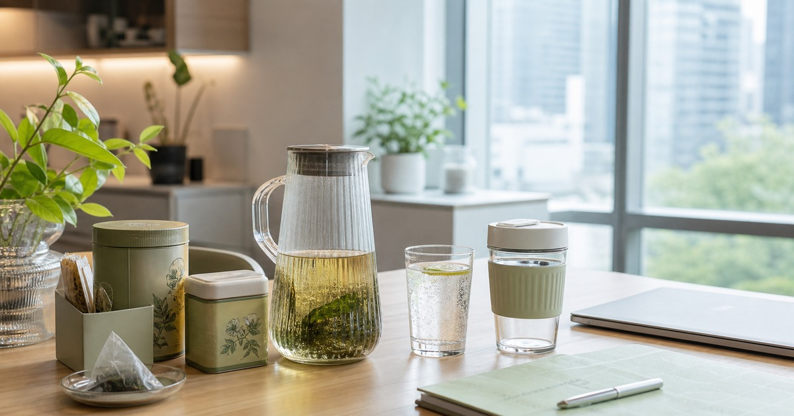

下午三點不要只喝手搖：無糖茶、花草茶與辦公室飲品清單
把下午茶從臨時手搖改成可保存、好沖泡、低干擾的辦公室飲品角落。

下午三點的飲品，很多時候是在替下一段工作換氣。與其每天臨時叫手搖，不如在辦公室或家中茶水角落準備幾種穩定選項：不佔冰箱、味道不打擾同事、沖泡不麻煩，也能讓會議之間有一個短短的停頓。
先分成冷飲、熱飲與共用飲
辦公室飲品不要只用口味分類，更應該看使用方式。冷飲需要冰箱或保冷杯，熱飲需要杯具和熱水，共用飲則要考慮包裝、保存和每個人的甜度偏好。
無糖茶適合放在最容易拿的位置，花草茶適合需要安靜感的下午，氣泡或風味飲則適合週五或待客時補一點儀式感。
- 冷飲：確認冰箱空間和保存期限。
- 熱飲：確認杯具、濾袋與清洗方式。
- 共用飲：選擇標示清楚、口味不過度強烈的品項。
茶水角落要好補貨，也要好收拾
一個好用的飲品角落，通常只有三層：最上層放每天會拿的茶包或瓶裝飲，第二層放杯具和攪拌用品，最下層放備品。這樣同事或家人使用後，比較容易回到原位。
如果飲品需要冰箱，建議不要一次買太多不同口味。先讓一兩種成為固定選項，其他放在週末或待客時補充，才不會讓冰箱變成飲料倉庫。
- 杯具固定放同一處。
- 茶包用透明盒分口味。
- 每週只補真正被喝完的品項。
Elite 嚴選
草本、酵素與機能飲品要用保守角度看
草本、酵素或帶有機能感的飲品，適合先當作一般風味飲或沖泡選項看待。不要把它們視為健康、代謝或保健解方，也不要用飲品替代正餐、睡眠或專業建議。
LING CHÁ、love, charlotte 樂芙夏、超激食驗室、水魔素 m+ 與清涼酵素，可以從無糖茶、花草茶、風味飲與沖泡品方向延伸；比較時請看成分標示、保存方式、糖分與飲用限制。
會議日和居家日可以準備不同組合
會議多的日子，選擇味道安靜、開瓶和沖泡聲音都不太打擾人的飲品。居家工作日則可以準備需要幾分鐘沖泡的茶，讓休息有更明確的開始與結束。
如果你常把飲品帶上通勤，瓶身尺寸、是否容易漏、是否需要冷藏，會比口味更先決定它能不能留下。
- 會議日：無糖、低氣味、容易收拾。
- 居家日：可沖泡、有停頓感。
- 通勤日：好帶、不易漏、標示清楚。
讓下午茶變成補位，不是負擔
飲品角落的目標不是把所有選項都備齊，而是讓你在忙碌時不用重新做一次選擇。兩款日常茶、一款待客飲、一款偶爾換口味的風味飲，已經足夠支撐大多數工作日。
涉及糖分、咖啡因、草本成分或特殊飲食限制時，請依個人狀況與商品標示評估；若有健康疑慮，應先詢問專業人員。
同主題品牌參考
FAQ
這篇文章會直接推薦單一品牌嗎？
不會。本文會把不同品牌放回生活情境中比較，協助讀者判斷使用頻率、收納位置與商品頁資訊，而不是把單一品牌寫成唯一答案。
商品價格、活動或庫存可以以本文為準嗎？
不可以。價格、活動、庫存、規格與配送條件都可能變動，請以下單前看到的商品頁或店家頁公告為準。
如果內容涉及健康、寵物或照護用品，應該怎麼判斷？
請把本文視為一般生活採買整理，不要當成醫療、營養、獸醫或個人化建議；若有健康、照護或寵物狀況，應先詢問合格專業人員。
下一步建議
先建立一個好補貨、好收拾的茶水角落，再慢慢加入無糖茶、花草茶與風味飲。
重要警語
草本、酵素與機能飲品只作一般飲用情境整理，不宣稱保健、代謝或療效。
本文含品牌／商品導購連結；若你透過部分商品連結前往選購，Elite Fashion 可能取得合作收益。本文仍以編輯判斷與使用情境整理為主，價格、規格、活動與庫存請以商品頁公告為準。